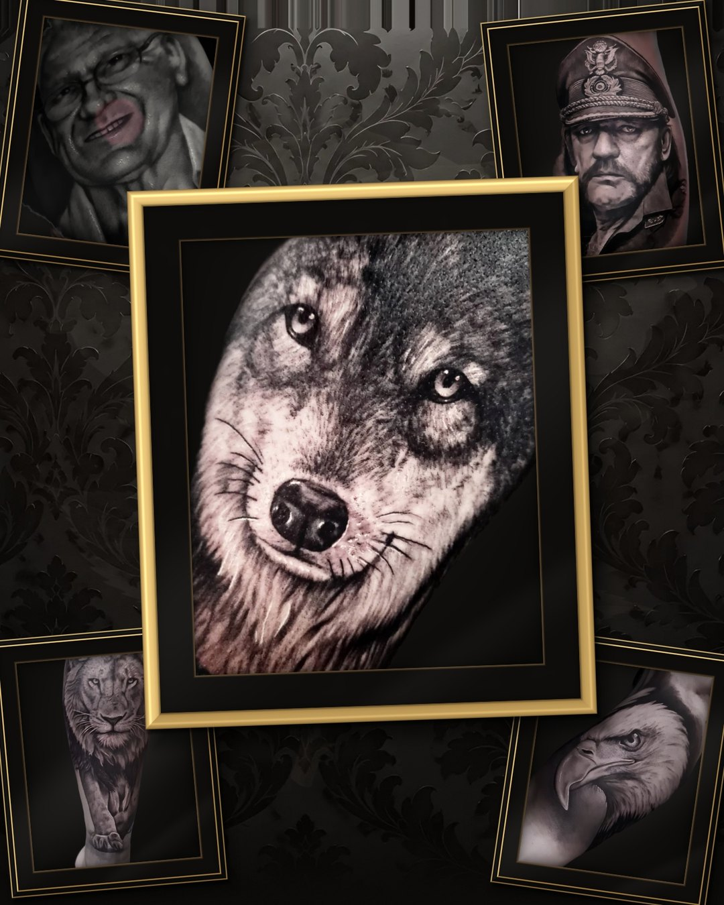
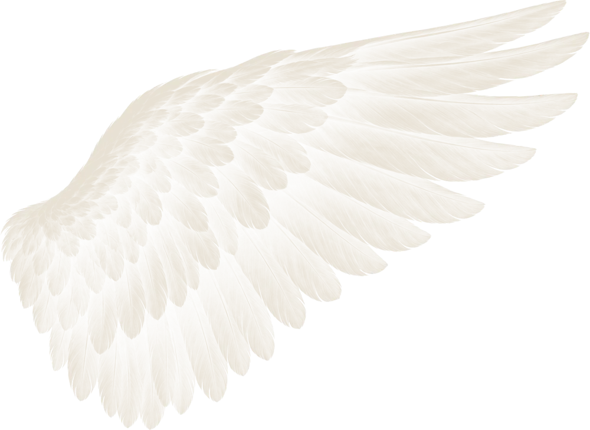
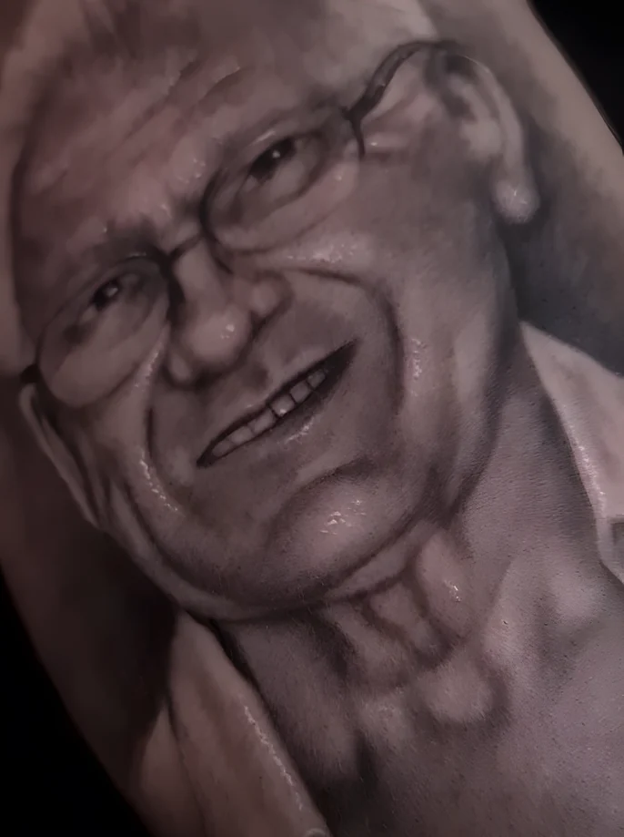
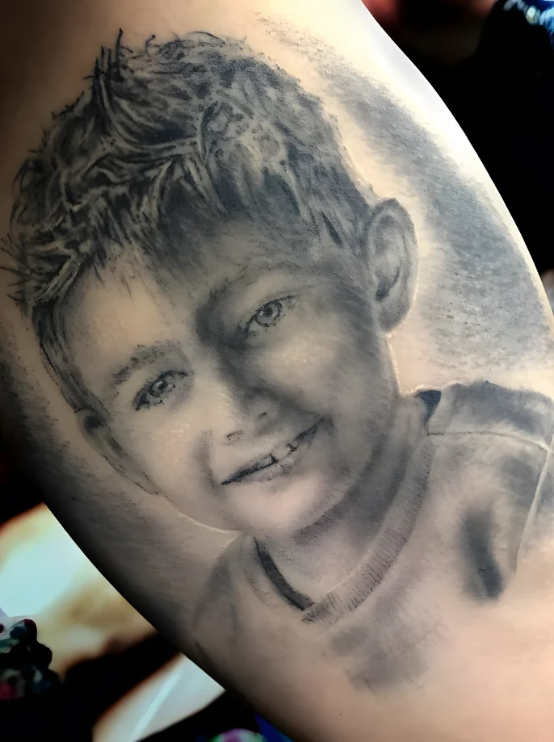
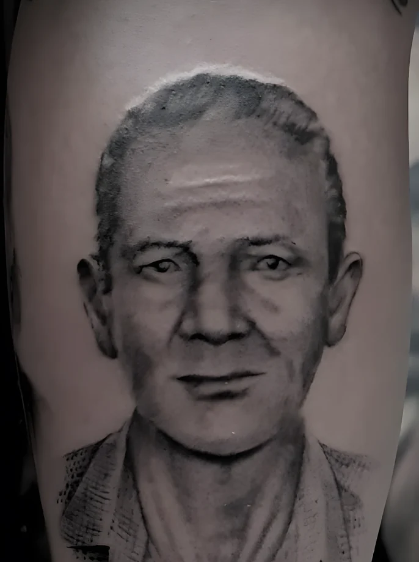
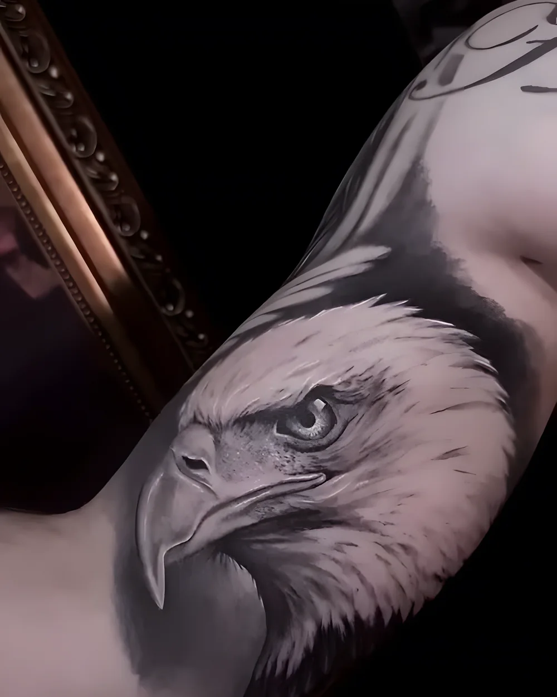
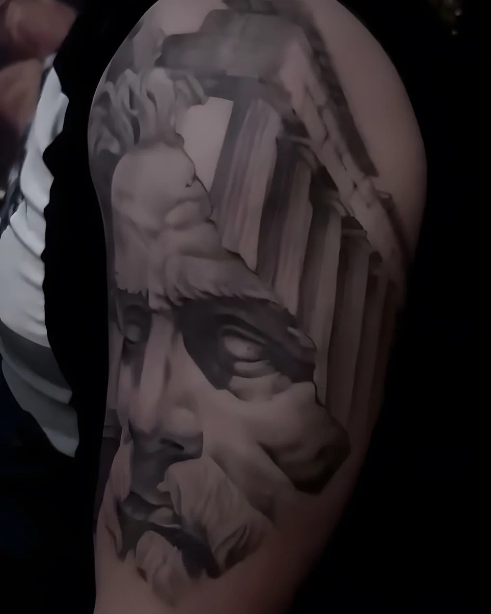
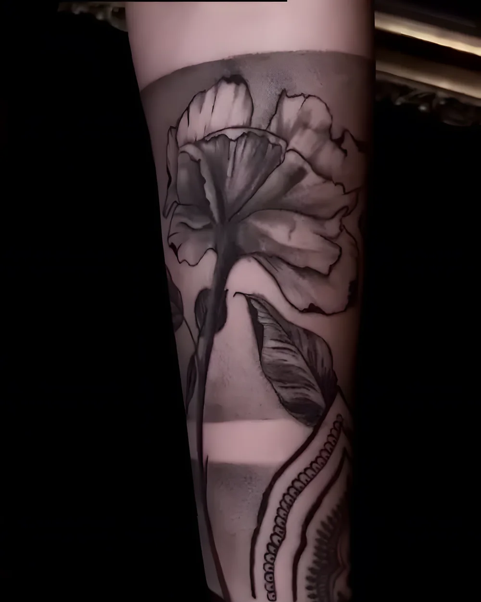
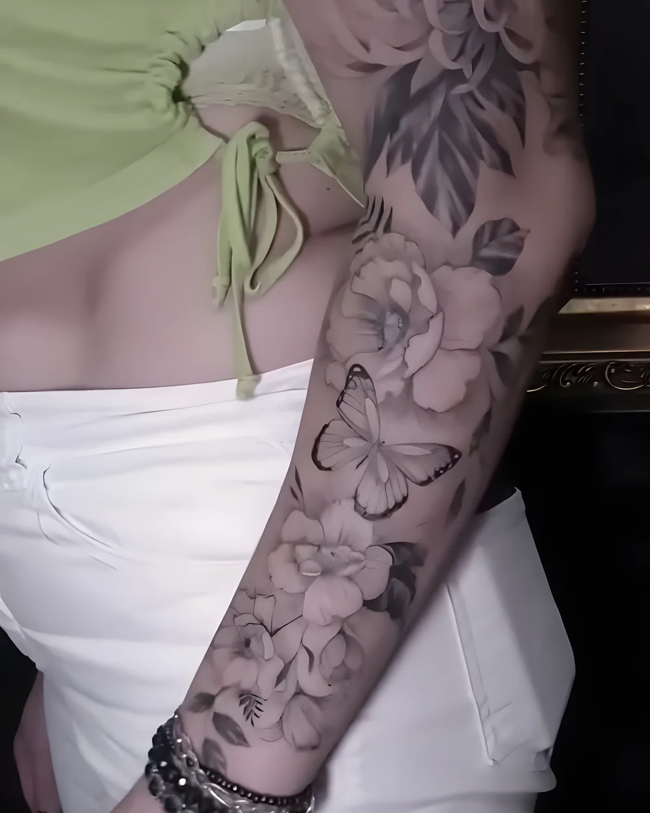
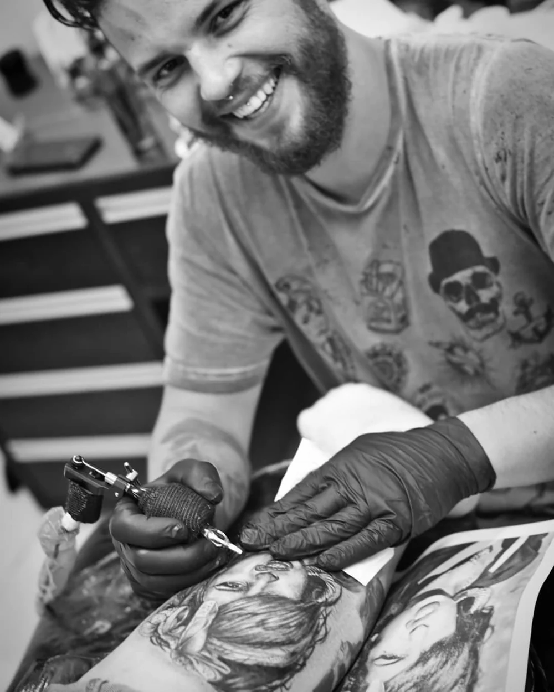

Trabalhos
Realismo preto e cinza, do retrato ao fechamento. Toque numa peça para ver em tamanho grande.

Uma honra
“É sempre uma honra fazer um retrato.”
Um filho, um pai, a avó, o cachorro da família. O retrato é a peça em que o Cássio mais coloca de si: ele mesmo conta que não tem como negar o frio na barriga antes de começar.



A foto certa
Mande a foto com a maior resolução que tiver. Rosto nítido, sem filtro.
Luz no rosto
Foto com luz e sombra marcadas rende um retrato com mais volume.
Tamanho real
Rosto pequeno perde detalhe. O Cássio indica o tamanho que a foto pede.
A história
Conte quem é a pessoa. A arte é montada em volta dela.
Cicatrizadas
O realismo bom aparece meses depois. Estas peças já cicatrizaram, fotografadas no estúdio.





Sobre o Cássio
Cássio Pescador é especialista em realismo preto e cinza em Concórdia, no oeste de Santa Catarina.
Os pedidos que mais chegam são retratos de quem importa, feras como leão, tigre, lobo e águia, santos, deuses e guerreiros, e fechamentos de braço, perna e costas. Peças grandes são feitas em etapas, com o tempo que o desenho pede.
Também desenha projetos autorais: o cliente traz a ideia e a referência, e a arte é montada para o corpo dele.
Ver o InstagramEstúdio
Parede preta, quadros dourados e uma cadeira por vez. Orçamentos e horários pelo WhatsApp.
- Onde
- Concórdia · Santa Catarina
- Orçamentos
- (49) 99803-0915
- @tattoocassio
Pedir orçamento
Preencha e o pedido chega pronto no WhatsApp do Cássio, com tudo o que ele precisa para responder.
A ideia
O tema, ou a foto de quem vai virar retrato.
O local
Em que parte do corpo vai ficar.
O tamanho
Pequena, média, grande ou fechamento.
As fotos
Na conversa, mande a referência e uma foto do local.